The owner picked 9, Axes and disc from the emblem round. These four keep everything he chose: two crossed axes behind a vertical disc with its teeth, one weight of white line, and blueprint-blue graph paper. The axes are redrawn as proper axes, each with a slim haft ending in a round knob, one clean bearded blade and a short back spike. The hafts cross cleanly behind the disc, and the disc's teeth are now hooked impactors on its rim. The four differ only in detail.
Mockups only; the app's icon is unchanged. Each version also has a ready asset set in docs/look/icon-final/<a|b|c|d>/AppIcon.appiconset/, in the same iOS 18 format as the current one: a 1024 master with no transparency, a dark variant and a greyscale tinted variant, with Contents.json. Installing the chosen one means copying its three PNGs over Roboteer/Assets.xcassets/AppIcon.appiconset/.
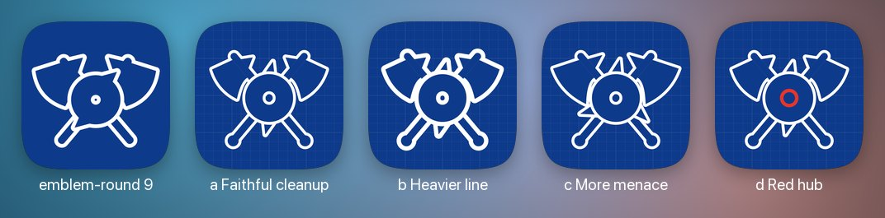
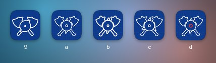
Number 9 as picked, redrawn: two proper axes (the game's arm, hub and bolted head, a clean broad blade, a short spike) crossing cleanly behind the disc.
Trade-off: the truest to what the owner chose; at 60 px the lines are at the edge of what still reads.
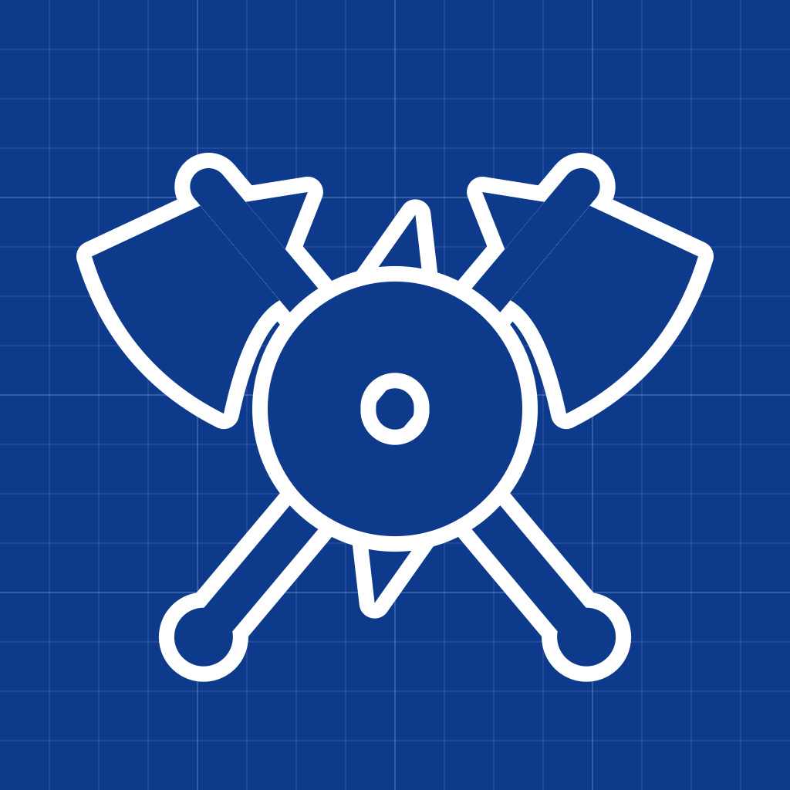
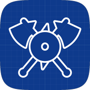
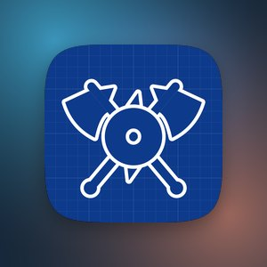
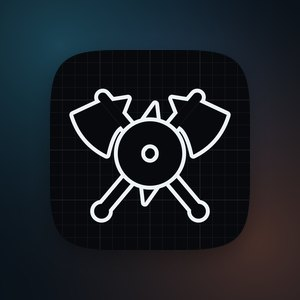
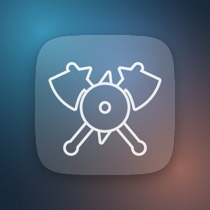
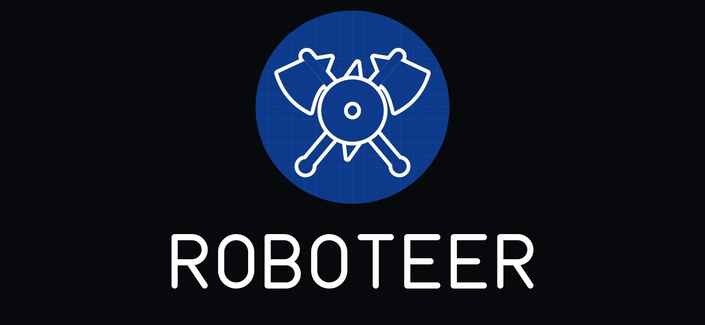
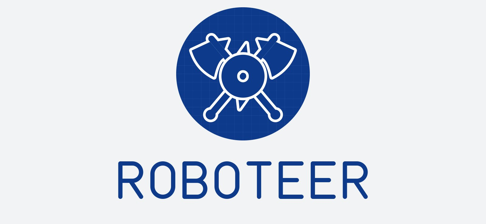
Asset set ready, not installed: docs/look/icon-final/a/AppIcon.appiconset/ (AppIcon.png, AppIcon-Dark.png, AppIcon-Tinted.png, Contents.json).
The same drawing with a heavier line, tuned so the axes and the disc teeth survive at home-screen size.
Trade-off: the best at 60 px, and it loses a little of the fine drafting feel at 1024.
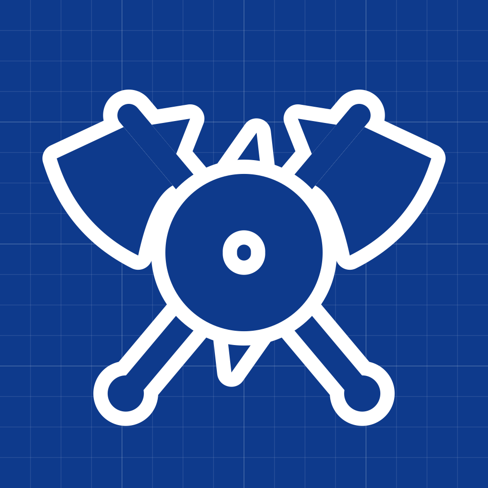
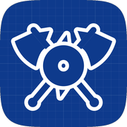
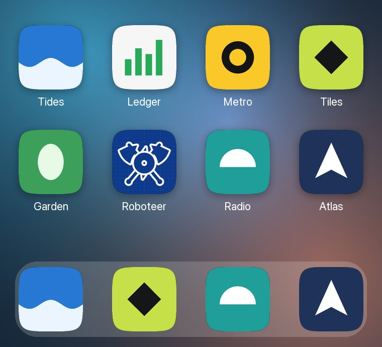
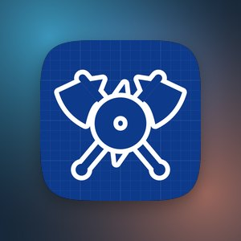
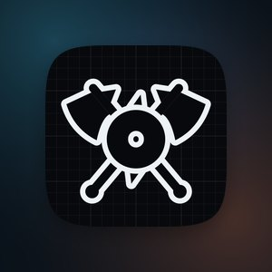
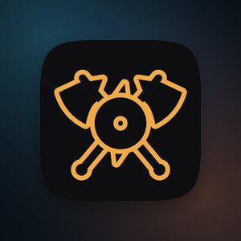
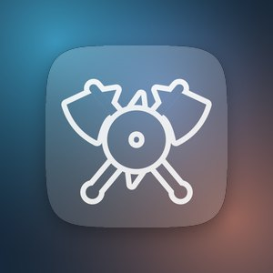
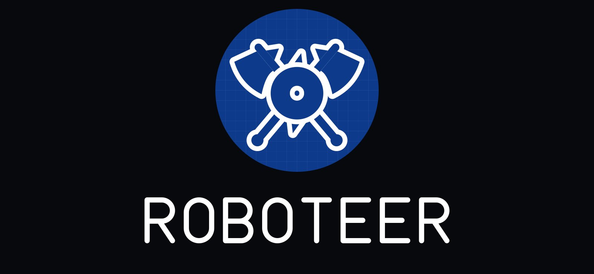
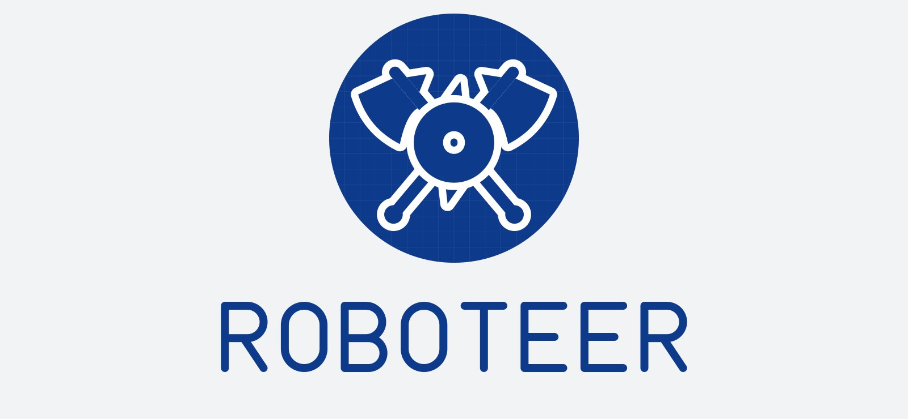
Asset set ready, not installed: docs/look/icon-final/b/AppIcon.appiconset/ (AppIcon.png, AppIcon-Dark.png, AppIcon-Tinted.png, Contents.json).
Longer axe blades swept to sharp points, a longer rear spike, and three bigger hooked teeth on the disc, still white line only.
Trade-off: clearly meaner and still 9, but the extra tooth and the points add detail that blurs first at small sizes.
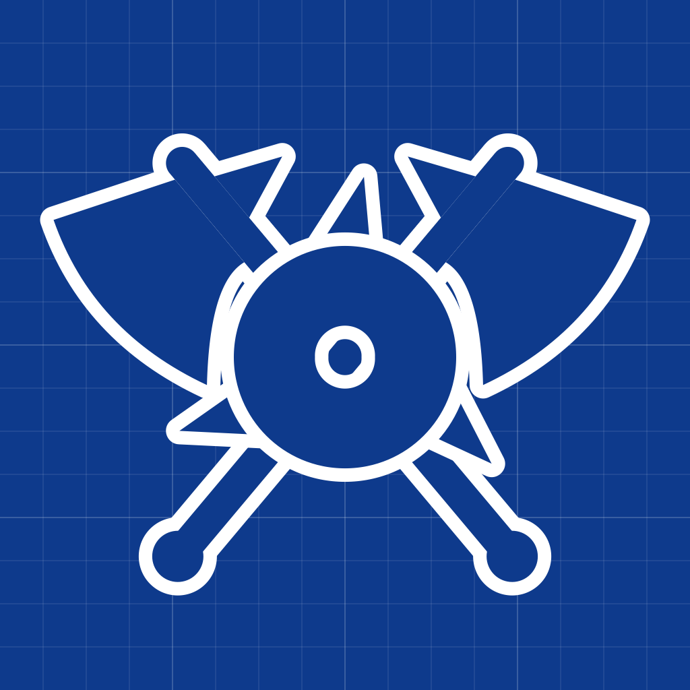
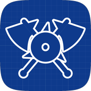
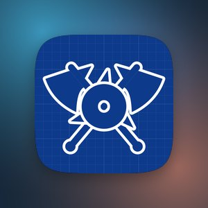
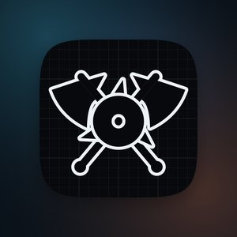
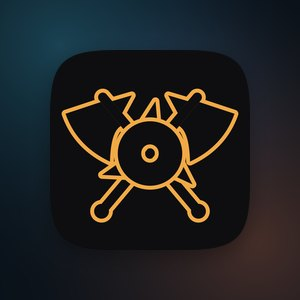
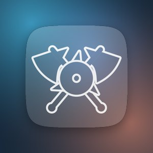
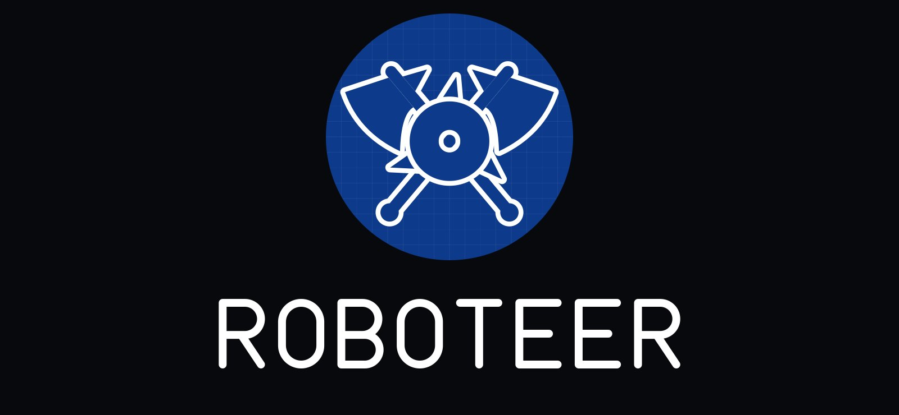
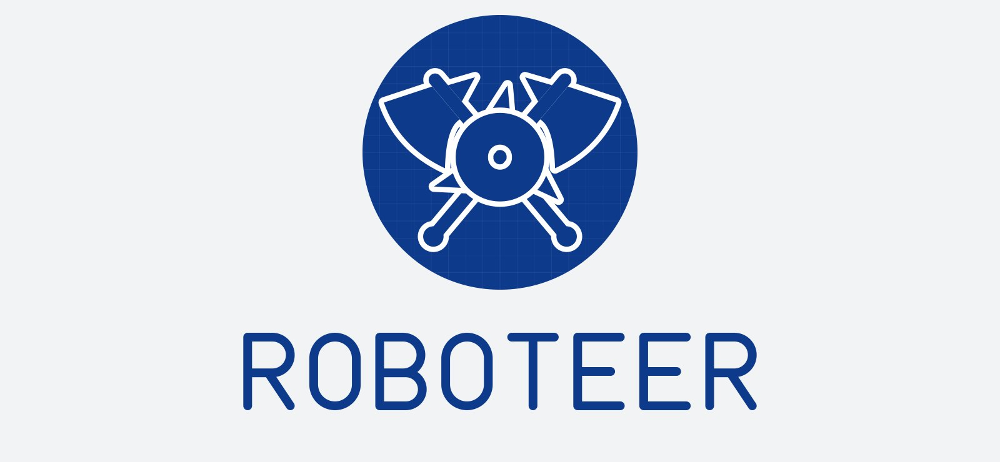
Asset set ready, not installed: docs/look/icon-final/c/AppIcon.appiconset/ (AppIcon.png, AppIcon-Dark.png, AppIcon-Tinted.png, Contents.json).
The faithful cleanup with one hazard-red accent: the disc's hub ring, the one place the eye lands.
Trade-off: one red ring makes it pop on a busy home screen, but it adds a second colour to what was a one-colour drawing.
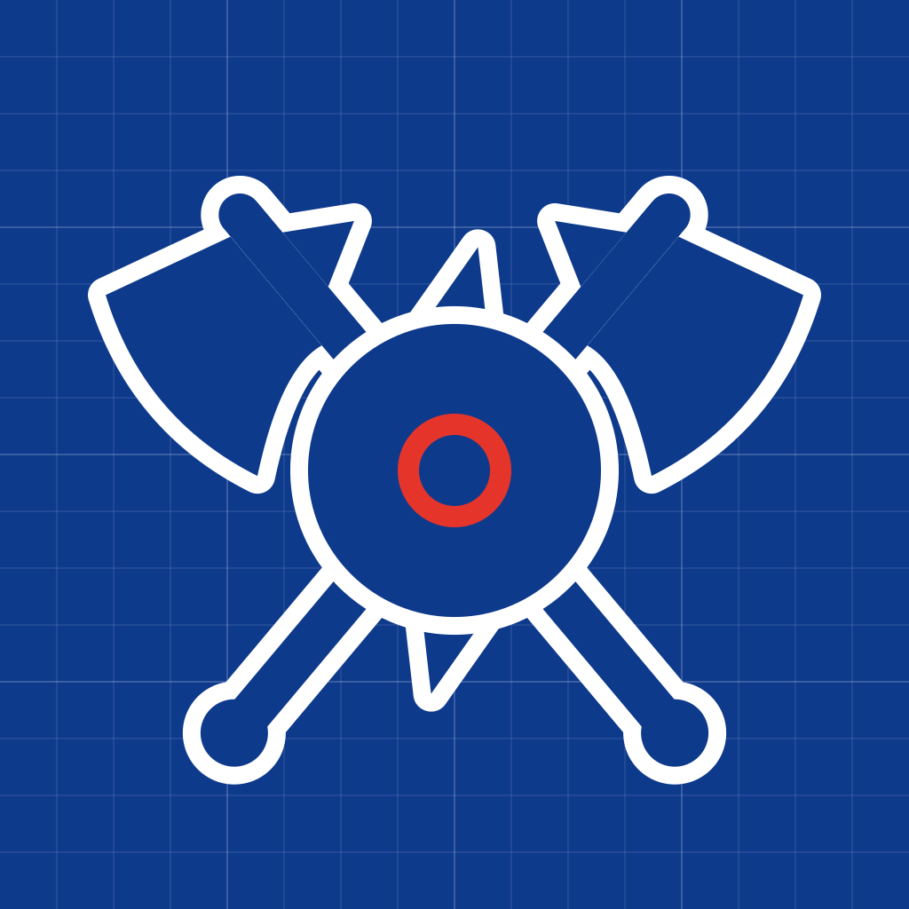
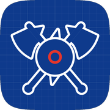
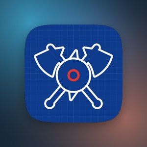
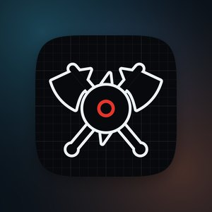
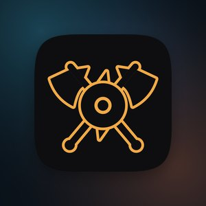
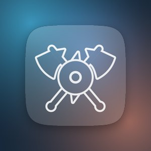
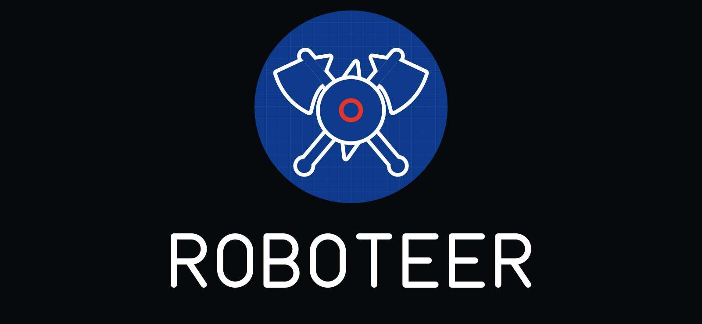
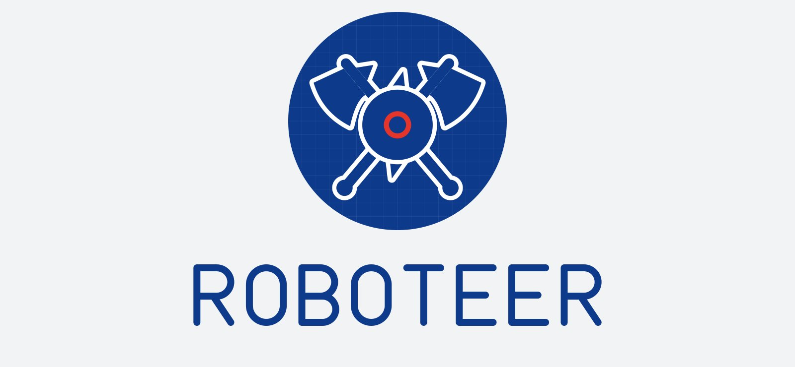
Asset set ready, not installed: docs/look/icon-final/d/AppIcon.appiconset/ (AppIcon.png, AppIcon-Dark.png, AppIcon-Tinted.png, Contents.json).